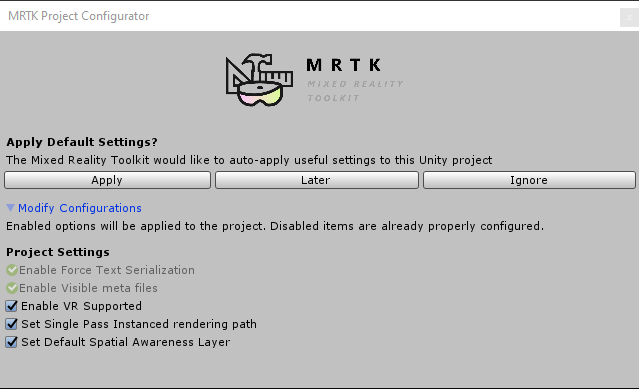
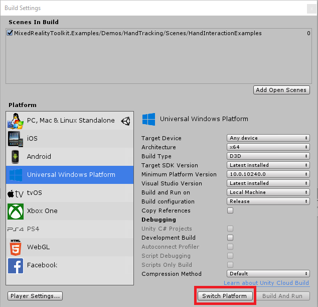
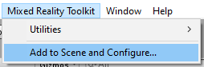
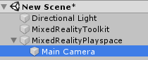
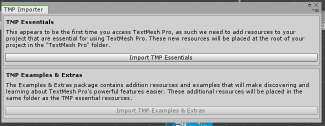

MRTK入门
混合现实工具包（MRTK）是用于为虚拟现实（VR）和增强现实（AR）构建混合现实体验的跨平台工具包。
初始准备
要开始使用混合现实工具包，您需要：
Unity 2018.4.x, 2019.1.x or 2019.2.x
MRTK支持Unity 2018上的IL2CPP和.NET脚本后端
-
如果要为WMR，HoloLens 1或HoloLens 2构建UWP应用，则这是必需的。为OpenVR构建时，则不需要。
将MRTK添加到您的Unity项目
需要
可选的
获取最新的MRTK Unity软件包
- 转到 MRTK 发布页面.
- 在 Assets下，下载
- Microsoft.MixedRealityToolkit.Unity.Foundation.unitypackage
- (可选) Microsoft.MixedRealityToolkit.Unity.Extensions.unitypackage
- (可选) Microsoft.MixedRealityToolkit.Unity.Tools.unitypackage
- (可选) Microsoft.MixedRealityToolkit.Unity.Examples.unitypackage
- (可选, 实验性的) Microsoft.MixedRealityToolkit.Unity.Providers.UnityAR.unitypackage
对于更多的包内容信息, 请查看 MRTK 包内容.
现在可以在NuGet.org上下载“混合现实工具包”，有关详细信息，请参阅MRTK NuGet 包.
将MRTK包导入到您的Unity项目中
- 创建一个新的Unity项目，或打开一个现有项目。创建项目时，请确保选择“ 3D”作为模板类型。
- 通过进入“Asset -> Import Package -> Custom Package”，选择.unitypackage文件，确保选中了要导入的所有项目，然后选择“Import”，导入下载的Microsoft.MixedRealityToolkit.Unity.Foundation.unitypackage。
- （可选）按照与上述相同的步骤导入Microsoft.MixedRealityToolkit.Unity.Examples.unitypackage。示例包是可选的，其中包含有关MRTK当前功能的有用演示场景。
- （可选）按照与基础包相同的步骤导入Microsoft.MixedRealityToolkit.Unity.Tools.unitypackage。这些工具包是可选的，并且包含有用的工具，例如ExtensionServiceCreator，可增强MRTK开发人员的体验。
- （可选）按照与基础包相同的步骤导入Microsoft.MixedRealityToolkit.Unity.Extensions.unitypackage。扩展包为MRTK提供了一组有用的可选组件。
- （可选） 按照与基础包相同的步骤导入Microsoft.MixedRealityToolkit.Unity.Providers.UnityAR.unitypackage .该包为MRTK中的移动AR(手机、平板)设备提供支持。
[!注意] 导入Microsoft.MixedRealityToolkit.Unity.Providers.UnityAR.unitypackage 需要执行额外的步骤。更多信息，请参阅UnityAR相机设置文章.
导入Foundation程序包后，您可能会看到如下的安装提示：

MRTK正在尝试通过执行以下操作来建立用于构建混合现实解决方案的项目：
- 为您当前的平台启用XR设置（启用XR复选框）。
- 强制文本序列化/可见元文件（推荐用于使用源代码管理的Unity项目）。
接受这些选项是完全可选的，但建议这样做。 某些预制件和资源需要TextMesh Pro，这意味着您必须安装TextMesh Pro软件包以及项目中的资源（“Window -> TextMeshPro->Import TMP Essential Resources”）。导入TMP Essentials资源后，需要重新启动Unity以查看更改。
将您的Unity项目切换到目标平台
导入软件包后，下一步就是为应用程序选择正确的平台。 要创建HoloLens应用程序，请切换到通用Windows平台：
- 打开菜单：File > Build Settings
- 在Platform列表中选择通用Windows平台(Universal Windows Platform)
- 单击“Switch Platform”按钮

[!注意] 选择平台后，混合现实工具包将提示将建议的更改应用于项目。无论何时切换平台，如有必要，都会检查并提示相应的设置。
将MRTK添加到新场景或新项目
- 创建一个新的Unity项目，或在当前项目中开始一个新场景。
- 确保已导入以下MRTK程序包（我们建议同时使用Foundation和Examples，尽管不需要Examples）以上步骤.
- 从菜单栏中，选择“Mixed Reality Toolkit -> Add to Scene and Configure”

inspector现在将显示当前活动的MRTK配置概要文件和配置文件选择菜单,其中默认配置文件已经被预先选择。 配置文件配置MRTK核心组件的行为，在配置文件文章中有更详细的描述。
[!注意] 如果你使用 HoloLens 或 HoloLens 2, 你应该选择"DefaultHoloLens1ConfigurationProfile" 或DefaultHoloLens2ConfigurationProfile". 查看配置文件 获取有关DefaultMixedRealityToolkitConfigurationProfile 和DefaultHoloLens2ConfigurationProfile的区别.
你将在你场景的hierarchy中看到如下图所示:

这包括:
- Mixed Reality Toolkit - 工具包本身，为整个框架提供中央配置入口点。
- MixedRealityPlayspace - 头显的父对象，可确保在场景中正确管理头显/控制器和其他所需系统。
- • 主摄像机作为子级移动到Playspace-允许Playspace与SDK一起管理摄像机
[!注意] 在场景中工作时，请勿将主摄像机（或MixedRealityPlayspace）从场景原点（0,0,0）移开。这由MRTK和活动的SDK控制。如果您需要用户的起点，请移动场景内容而不是相机！
- 点击paly按钮并按空格键测试手部模拟。
您现在可以构建并部署到设备了！请按照以下步骤的说明进行操作构建和部署MRTK.
入门教程
如果您不熟悉MRTK或MR开发，建议您查看 入门教程 使用MRTK v2.
了解MRTK的核心组成部分
在Unity编辑器中运行HandInteractionExamples场景
手势交互实例场景 是学习更多关于MRTK中的UX控件和交互的好地方.
要尝试手势互动场景，请执行以下步骤.
在
Assets\MixedRealityToolkit.Examples\Demos\HandTracking\Scenes\HandInteractionExamples下打开HandInteractionExamples 场景您可能会收到提示，要求您导入“ TMP Essentials”.

如果出现这样的提示，请选择“Import TMP essentials”按钮。“ TMP Essentials”是指Text Mesh Pro插件，某些MRTK示例使用该插件来改进文本呈现。 (查看 Unity中的文本 有关更多详细信息)
- 关闭“ TMP”对话框。之后，您需要重新加载场景。您可以通过双击项目选项卡中的场景来执行此操作.
- 按下播放按钮
使用编辑器内手动输入模拟来测试场景
编辑器中的输入模拟可让您测试特定类型的输入，例如手势输入 或者 眼动输入.
如何在场景四处异地
- 使用 W/A/S/D 键向前/向左/向后/向右移动相机.
- 使用 Q/E 垂直移动相机.
- 按住鼠标右键旋转相机.
如何模拟手势输入：
- 按住空格键以启用右手。
- 按住空格键时，请移动鼠标来移动手
- 使用鼠标滚轮调整手的深度。
- 单击鼠标左键以模拟捏合手势。
- 使用T / Y键将手保持在场景中。
- 按住CTRL键并移动鼠标以旋转手。
在探索中玩得开心！您可以了解有关UI控件的更多信息在手势交互示例指南中. 另外，通读 输入模拟文档 了解有关MRTK中编辑器内手动输入模拟的更多信息。
恭喜，您刚刚使用了第一个MRTK场景。现在开始创建自己的体验...
下一步
以下是一些建议的后续步骤：
- 查看 MRTK 101: 如何使用混合现实工具Unity包进行基本交互 了解如何实现常见的空间交互，例如抓取，移动，缩放和旋转.
- 了解MRTK中可用的UX控件，在UI界面和交互构建块中.
- 尝试 MRTK 示例中心 (为方便起见，发布页面中包含预构建的应用程序包)
- 了解如何使用MRTK配置配置文件 混合现实配置指南.
- 了解有关 MRTK的架构
- 了解有关 MRTK的输入系统
- 了解有关MRTK的工具 这将为您的混合现实设计和开发提供支持.
- 通读 输入模拟指南 了解如何在编辑器中模拟手动输入.
从HoloToolkit（HTK / MRTK v1）升级
由于重建了框架，因此没有从HoloToolkit到Mixed Reality Toolkit v2的直接升级路径。但是，可以将MRTK导入到HoloToolkit项目中并迁移您的实现。有关更多信息，请参见HoloToolkit到Mixed Reality Toolkit移植指南